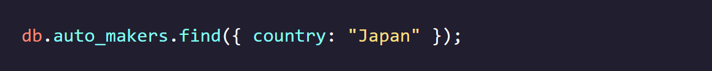
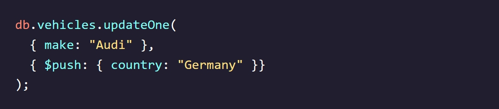
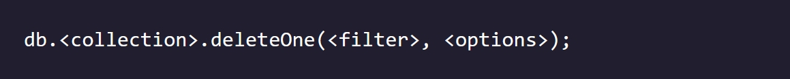
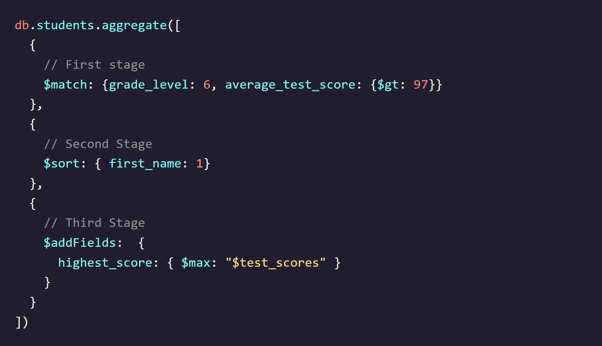
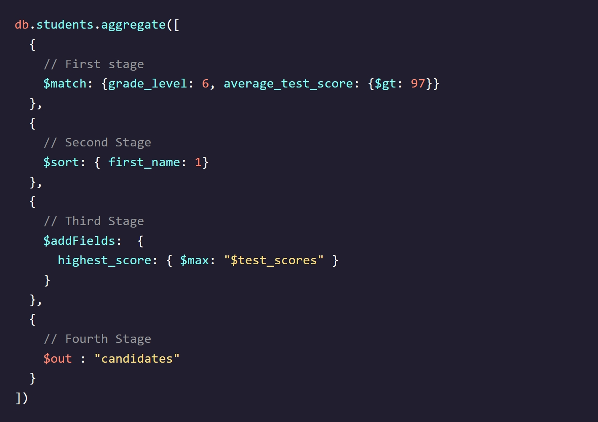

Codecademy - Learn MongoDB
Notes taken while going through the Codecademy Learn MongoDB course
Introduction to Databases
What is a Database?
- Databases store, modify, and retrieve collections of information electronically.
- They enable websites like Codecademy to retain and retrieve large amounts of information in an organized and consistent manner.
- Benefits of using databases in software development:
- Efficient storage and retrieval of data.
- Data consistency and integrity.
- Data security and access control.
- Scalability for handling large amounts of data.
- Databases are essential for organizing and managing content on websites.
- Different database classifications exist, and understanding them is useful for developers.
Why Databases?
- Databases are crucial for storing data in various types of software applications.
- They allow for the persistence of important information necessary for application functionality.
- Databases are often represented as a bucket that can store any type of information.
- Applications interact with a database through a database management system (DBMS).
Database Management Systems (DBMS)
- DBMS (Database Management System) is the software that encapsulates the database and allows interaction with it.
- It provides a programming language or graphical interface (GUI) to work with the database.
- DBMS allows storing multiple databases and provides unique features for maintaining data.
- Different types of data can be stored in the database, including strings, numeric data, date and time types, booleans, images, and audio files.
- Each DBMS has its own implementation and offers advantages and disadvantages.
- Two common types of databases and their associated DBMS are discussed:
- Relational databases: Known for storing data in tables with predefined relationships, using SQL for manipulation and retrieval.
- Non-relational databases: Store data in flexible, schema-less formats like key-value pairs, documents, or graphs, providing scalability and performance.
- The choice of DBMS depends on the specific requirements and use cases of the application.

Relational Databases
- Relational databases structure data in tabular form with rows and columns.
- Data is organized and stored in tables, with each table representing a specific entity or concept.
- Relationships between tables can be defined, such as "one-to-one," "one-to-many," and "many-to-many."
- A music streaming website might have tables for albums, songs, and artists, with relationships established between them.
- A relationship between the Songs and Albums table. A song “belongs” to an album via the album_id field.
- A relationship between the Albums and Artists table. An album “belongs” to an artist via the artist_id field.
- Relational databases have a pre-defined schema, determined before inserting any data.
- Developers interact with relational databases using SQL (Structured Query Language).
- Relational databases are often referred to as SQL databases due to their reliance on SQL.
- They are managed by a Relational Database Management System (RDBMS).
- Popular RDBMS options include PostgreSQL and MySQL.
- Relational databases have unique disadvantages at an enterprise level, including cost and space considerations for large data sets.


Non-Relational Databases
- Non-relational databases, also known as NoSQL databases, do not follow the relational model.
- They store data in formats other than tables and do not strictly rely on relationships.
- Different types of non-relational databases include document databases, graph databases, and key-value databases.
- Non-relational databases specialize in storing unstructured data that doesn't fit neatly into rows and columns.
- Example: Music database stored in a document database using JSON format.
- Non-relational databases offer flexibility and scalability, allowing for flexible schemas and easy adaptation to changing application needs.
- Each NoSQL database has its own custom query language instead of a standardized language like SQL.
- Disadvantages of non-relational databases include potential difficulties in maintaining and tracking unstructured data and the need to learn different query languages for each database.

Review: Introduction to Databases
- Databases:
- Databases are systems that store, modify, and access structured collections of information electronically.
- Database Management Systems (DBMS) allow developers to communicate via code or a graphical user interface with a database.
- Databases can store a wide range of data types, including text, numbers, dates and times, and files of various types.
- Relational Databases:
- Relational databases, a common database class, organize data into tables of rows and columns of information and rely on relationships to organize data.
- A relational database schema is typically pre-defined before data is entered.
- All relational databases use SQL to allow developers to communicate with the database using a common language.
- Relational databases can be costly to set up and scale. Performance and cost are big factors in using a relational database in an application.
- Non-Relational Databases:
- Non-relational databases, another common database class, refer to any database that does not follow the relational model.
- Non-relational databases typically have a more flexible schema and are more easily scaled than relational databases. However, the unstructured nature of the data can make it difficult to maintain, and each non-relational database has its own query language.
Useful Links:
Introduction to No-SQL
Introduction to No-SQL
- NoSQL is an alternative to relational databases.
- NoSQL stands for "not-only SQL" or "non-relational" databases.
- NoSQL databases store data differently from relational databases.
- NoSQL encompasses various database technologies.
Arriving at No-SQL
- Relational databases have been around since the late 1960s and have been widely used.
- With the increase in data size and complexity, developers sought a more flexible and scalable database solution.
- NoSQL databases emerged as an alternative to address these needs.
- Developers choose NoSQL databases for reasons like flexibility, scalability, handling large and diverse datasets, unstructured data support, high performance, and distributed/cloud environments.
- NoSQL databases offer flexibility in schema design and can accommodate evolving data requirements.
Is No-SQL the Right Option?
- NoSQL databases offer distinct advantages over relational databases.
- Benefits of NoSQL databases:
- Scalability: Designed for handling massive datasets distributed across multiple servers and locations.
- Flexibility: No schema requirement allows handling of unstructured or semi-structured data in different formats.
- Developer Experience: Less organizational overhead allows developers to focus more on using the data.
- Drawbacks of NoSQL databases:
- Data Integrity: NoSQL databases prioritize availability and scalability over strict data integrity.
- Language Standardization: Each NoSQL database often has its unique language for setup, management, and querying.
Types of No-SQL Databases
- There are four common types of NoSQL databases.
- Key-Value Databases:
- Organize data using key-value pairs.
- Keys and values can be any type of data, but keys must be unique.
- Ideal for fast queries and simple data.
- Examples: Amazon DynamoDB, Redis.
- Document database:
- Document-based databases store data in hierarchical structures.
- They support document formats like JSON, BSON, XML, and YAML.
- The document-based model extends the key-value database and allows querying based on more than just unique keys.
- Documents are flexible and can evolve to fit application needs, including modeling relationships.
- Example: Storing product information for customers in an e-commerce store.
- MongoDB is a popular option for working with document databases.
- Graph Databases:
- Graph databases store data using a graph structure with nodes and edges.
- Nodes represent entities, while edges represent relationships between nodes.
- Graph databases simplify the setup, management, and querying of relationships compared to relational databases.
- They are useful for scenarios such as building recommendation engines based on user searches.
- Example: Establishing relationships between items to create recommendations in an e-commerce store.
- Neo4j is a popular option for working with graph databases.
- Column Oriented Databases:
- Column-oriented NoSQL databases store data as columns rather than rows, aiming to provide faster read speeds.
- Data is aggregated quickly for specific columns, making it efficient for analytical queries.
- Column-oriented databases eliminate the need to pull irrelevant data from adjacent rows.
- Example: Analyzing total sales for products by aggregating data from the sales column.
- Amazon's Redshift is a popular option for working with column-oriented databases.


Review: Introduction to No-SQL
- NoSQL stands for “not-only SQL” (also called “non-relational”, or “non-SQL”) and refers to any database that stores data in any format other than relational tables.
- NoSQL database technology grew in popularity due to datasets growing in size and complexity.
- NoSQL databases may provide flexibility, scalability, and speed advantages.
- NoSQL databases experience disadvantages such as lack of data integrity and lack of language standardization across different NoSQL databases.
- Common types of NoSQL databases include key-value, document, graph, and column-oriented.
Introduction to MongoDB
Introduction
- Modern databases allow us to store, organize, and retrieve data.
- Two main classes of databases: relational (SQL) and non-relational (NoSQL).
- Relational databases store data using tables (rows and columns) and work well for organized data.
- Non-relational databases store data in various ways and work well for unstructured data.
- MongoDB is one of the most popular document databases.
What is MongoDB?
- MongoDB is a database system released in 2009 and regularly updated.
- It uses the document model to store data.
- The document model stores data in documents and collections.
- Data inside documents is typically stored in hierarchical structures like JSON, BSON, and YAML.
- In contrast to relational databases, MongoDB stores data in individual documents rather than rows in tables.
- Each document can have a unique set of fields.
- Documents are stored inside collections.
- MongoDB is known for its flexibility and developer-friendly features.
Advantages of Using MongoDB
- Flexibility and Scalability:
- Flexible data storage: Document databases like MongoDB allow for flexible storage of data. Unlike relational databases where changing a column in a table affects all entries, changes to a single document in MongoDB have no impact on other documents. This flexibility enables easy adaptation of the database to evolving application requirements.
- Scalability: As applications grow, the database must be able to handle increasing amounts of data. MongoDB offers various user-friendly options for scaling the database to accommodate growth. This ensures that the database can handle larger workloads and increasing demands without compromising performance.
- Developer-Friendly:
- MongoDB databases support a variety of different use-cases. To name a few, MongoDB can be used to build web, mobile, and desktop applications. MongoDB also has features that support data analytics and data visualization.
- Given MongoDB’s popularity, a large community has formed around the technology. This means there are a plethora of resources (e.g., forums, articles, conferences) available for developers at any level.
- MongoDB has a significant amount of detailed documentation and educational tools (like MongoDB University) to help developers learn about all of MongoDB’s unique features.
- Diverse Cloud Tooling:
- MongoDB Atlas: MongoDB's multi-cloud database service that allows developers to easily create, manage, and deploy MongoDB databases in the cloud. It eliminates the need for local MongoDB setup and provides an online dashboard for database management.
- MongoDB Realm: A cloud offering by MongoDB that enables developers to quickly build applications integrated with MongoDB. Realm supports various use cases, including mobile, internet-of-things (IoT), and desktop applications. It allows for database creation on mobile devices, seamless data synchronization, and complex tasks like authentication.
Review: Introduction to MongoDB
- MongoDB is a NoSQL document database. This means that data entries in the database are stored inside documents within collections.
- Choosing to use MongoDB has some key benefits:
- Flexibility and Scalability
- Developer Friendly
- Diverse Cloud Tooling
MongoDB & Data
Collections & Documents
- MongoDB uses the document model to store data.
- Data in MongoDB is organized into collections, which are subsets of the database.
- Each collection contains individual records called documents.
- Documents store information about specific entities.
- Collections group together documents with similar information.
- MongoDB databases consist of multiple collections assembled to store data for a specific use case.
- In the example of a camera store, the database would have collections for purchase data, inventory, and customer information.
- Documents within the customer collection would store personal information about each customer.
Data as JSON
- JSON (Javascript Object Notation) is a text format for storing data.
- JSON stores data as key-value pairs within curly braces.
- MongoDB and various online resources also refer to these pairs as “field-value” or “name-value” pairs.
- Fields are unique identifiers for data points, indicating what kind of data is being stored.
- Values are the actual data points associated with each field.
- JSON supports various data types such as strings, numbers, arrays, and nested data.
- JSON is readable and easily editable by humans and computers.
- However, there are drawbacks to using JSON as a primary storage format in databases:
- JSON is computationally inefficient as parsing text takes time.
- It is not storage-efficient due to longer descriptive field names taking up more space.
- JSON has limited support for data types, lacking native support for dates.
- While JSON has advantages, it is not ideal as the primary storage format for databases.
BSON - MongoDB’s Storage Format
- BSON (Binary JavaScript Object Notation) is MongoDB's storage format for data.
- BSON differs from JSON in three ways:
- BSON is not human-readable.
- BSON is more efficient in terms of storage.
- BSON supports additional data formats not found in JSON, such as dates.
- BSON allows MongoDB to bridge the gap between JSON's flexibility and readability and the performance requirements of a large database.
- MongoDB stores data internally as BSON, but developers can interact with and manipulate the data using JSON.
- This approach enables efficient data storage and provides a good developer experience.
Review: MongoDB & Data
- A MongoDB instance can contain many databases, and within a database are collections of similar data. Collections contain individual records called documents that are stored as field-value pairs.
- JSON is a human-readable but inefficient format for storing data; conversely, BSON is not human-readable but is highly efficient.
- MongoDB users can easily store and manipulate data as JSON – even though internally, that data is stored as BSON.
Useful Links:
MongoDB Data Modeling Basics
- A data model provides structure and organization to complex sets of information.
- A well-designed data model enhances database usability and efficiency.
- Two different data models can have different implications for usability and efficiency.
- Model A: Offers better data integrity and lower storage usage, but querying may take longer since data is spread across multiple collections.
- Model B: Provides performance benefits with faster queries, but may have duplicated data.
- Choosing the appropriate data model is vital for optimizing data storage and retrieval.
- Applications may require data model refactoring as database requirements evolve.
- Selecting the most suitable data model for your application is crucial for ensuring efficient data organization and retrieval.
Modeling Relationships in MongoDB
- Relationships between data are important when considering the structure of collections in MongoDB.
- Using the example of a car database, a car document contains attributes like color and size, but may also have information about the car's engine.
- The engine is a separate entity with its own attributes, and it wouldn't be appropriate to make engine_power an attribute of the car.
- It's necessary to determine the relationship between the car data and the engine in the context of the entire database.
- The challenge in data modeling is to decide how to represent the engine as a separate entity and define its relationships to the car and across the collection.
- MongoDB offers two options for establishing relationships: embedded documents or references.
Embedded Documents
- Embedded documents allow us to nest related data directly inside a document in MongoDB.
- Nested documents are called sub-documents.
- Embedded documents are denormalized, meaning related data is stored together in a single collection.
- A good use case for embedded documents is modeling one-to-one relationships, where one entity contains another. For example, a car document can have an embedded sub-document for the engine.
- Another use case is modeling one-to-many relationships, where one entity maps to many sub-entities. For example, a car owner document can have multiple embedded car sub-documents representing the cars they own.
References
- References in MongoDB allow us to create links between data to establish relationships.
- With references, data is split into multiple documents and linked using identifiers.
- In the car and engine example, the engine data is stored in a separate collection and linked to the car document using the engine_id field.
- This type of data model is called a normalized data model and resembles how relationships are created in relational databases.
- References are useful for modeling many-to-many relationships, where many instances of one entity can be mapped to many instances of another entity.
- An example is the relationship between car rentals and individuals renting cars, where a car can be rented by multiple individuals and an individual can rent multiple cars.
Choosing the Right Model
Case A: A time management application that stores one user per task. We want to store details about the task, such as the task name, the task due date, and the user assigned to the task (and their associated details). There can only be one person assigned to each task.
- In the given scenario, we are modeling a one-to-one relationship between a task and a user.
- To retrieve the user data along with the task details in one query, it is preferable to use an embedded document.
- The document represents a task with the task name, due date, and the assignee's information embedded within it.
- The assignee information includes the name, role, and contact details of the user assigned to the task.
- By using an embedded document, we can retrieve all the necessary information for the task and the assignee in a single query.
Case B: A contact information management application that can store multiple addresses per user. The application would store important details for the person such as their name, as well as their associated addresses.
- In this case, we are modeling a one-to-many relationship between a user and their associated addresses.
- There are two ways to implement the data model: using embedded documents or references.
- If we choose to use embedded documents, each user document would contain an array field called addresses, where each element represents an address with a label and its corresponding details.
- Using embedded documents is preferable when there are frequent queries on the addresses field, as we can retrieve the address information directly from the user document.
- However, if multiple users start sharing the same address, the embedded documents may lead to repetition and increased storage.
- In such cases, using references is recommended. The addresses would be stored in a separate addresses collection, with each address having a unique ID.
- The user documents would then include an array field called addresses, containing the unique IDs of the associated address documents.
- By using references, we avoid the repetition of address details and maintain a more efficient data model.
- The choice between embedded documents and references depends on factors such as the frequency of accessing address information and the size of the data, which should be considered when making the data modeling decision.
Case C: A school registration application that manages multiple students. Each student can be in multiple classes. Each class record can easily identify which students are registered and each student record can quickly find any associated classes.
- In this application, we have many students sharing a relationship with many classes.
- Here, we need to model a many-to-many relationship.
- In this case, references might be preferred.

Review: MongoDB Data Modeling Basics
- Data modeling is the practice of developing an organizational structure for the data in our database.
- Choosing a data model can have lasting implications on the database and its long-term performance, maintainability, and usability.
- Embedded documents and references are two of the most common ways to model data. These two methods help define the relationships between the data in collections.
- Reference-based data models are normalized; they use links inside of the data (typically via the _id field) to create relationships.
- Embedded data models are denormalized; they use nested documents inside of collections to create relationships.
Useful Links:
MongoDB CRUD I - Finding Documents
Browsing and Selecting Collections
- To list all existing databases, use the command "show dbs". This will display a list of databases in the current MongoDB instance, along with their respective disk space usage.
- If you would like to list all collections within the DB you can use the "show collections" command
- To navigate to a specific database, use the command "use dbNameHere". For example, if you want to work with the e-commerce database, you would run "use online_plant_shop". This command will switch you to the specified database, and if it doesn't exist, MongoDB will create it.
- After executing the use command, the terminal prompt will show the name of the current database you're working with, indicated by the > symbol. For instance, it will change from test> to online_plant_shop>.
- If you want to check the name of the currently selected database, use the command "db". This will display the name of the database you are currently using.
Introduction to Querying
- Persistence in databases refers to the ability to store data that is stable and enduring.
- CRUD is an acronym for the four essential functions of a persistent database: create, read, update, and delete.
- Querying is the process of requesting data from a database.
- The focus of this lesson is on reading data (the "R" in CRUD) from a MongoDB database.
- To read data from MongoDB, we need to query the database.
- The most common way to query data in MongoDB is by using the .find() method.
- The syntax for the .find() method is db.collectionNameHere.find().
- The .find() method is called on a specific collection.
- Calling .find() without arguments will match all documents in the specified collection.
- When the query is successful, MongoDB returns a cursor, which is an object that points to the matched documents.
- MongoDB uses cursors to return query results in batches, as queries can potentially match a large number of documents.
- When querying collections with the .find() method, MongoDB returns the first set of matching documents.
- To access the next batch of documents, the it keyword (short for iterate) can be used.
Querying Collections
- To find specific documents in a collection, we can pass a query as the first argument to the .find() method.
- The query argument is formatted as a document with field-value pairs that we want to match. 
- We can have as many field-value pairs as we want in our query.
- Query fields and their associated values are case and space sensitive.
- The .find() method uses the implicit equality operator, $eq, to match documents based on the specified field and value.
- We can also explicitly include the equality operator in our query document using the syntax:
- However, MongoDB handles implicit equality by default, so we can use the shorthand syntax for basic queries.
- In the upcoming exercises, we will learn about other operators that can be used to specify ranges and other criteria for matching documents in our queries.
Querying Embedded Documents
- MongoDB allows us to embed sub-documents directly within a parent document to establish relationships between data.
- Sub-documents are nested documents that can be accessed using dot notation.
- To query on fields in embedded documents, we use the syntax:
- We must use the parent field (the name of the field wrapping the embedded document) followed by the dot (.) notation and the embedded field we are looking for.
- The parent and embedded fields should be wrapped in quotation marks.
- When querying embedded documents, we can access arrays of embedded documents as well.
- For example, to find a document with a specific model name, we can use:
- This query will return the document that matches the specified model name.
Comparison Operators: $gt and $lt
- MongoDB provides comparison query operators that allow us to match documents based on measures of equality.
- The greater than operator, $gt, is used to match documents where the value for a particular field is greater than a specified value.
- The greater than or equal to operator, $gte, can be used to match documents where the value is greater than or equal to the specified value.
- The less than operator, $lt, is used to match documents where the value for a particular field is less than a specified value.
- The less than or equal to operator, $lte, can be used to match documents where the value is less than or equal to the specified value.
- Comparison operators can be used with any data type.
Sorting Documents
- MongoDB allows us to sort query results by specific fields or sets of fields.
- To sort documents, we use the .sort() method appended to the query.
- The .sort() method takes a document as an argument, specifying the fields to sort by and their respective sort order.
- The sort order values can be 1 or -1. A value of 1 sorts the field in ascending order, while -1 sorts it in descending order.
- For datetime and string values, a value of 1 sorts in chronological or alphabetical order, respectively.
- Sorting on fields with duplicate values may result in different orderings of documents with those values in subsequent queries.
- Additional fields can be specified for more consistent sorting. For example: db.records.find().sort({ "release_year": 1, "artist": 1 });
Query Projections
- MongoDB allows us to specify the exact fields we want to include or exclude in our query results using projections.
- Projections are specified as a second argument to the .find() method, using a projection document.
- In the projection document, fields can have a value of 1 to include them or 0 to exclude them.
- Projections help us retrieve only the necessary data from documents, especially when dealing with large or complex structures.
- If a field is not explicitly excluded or included, it is included by default in the query result.
- It's possible to exclude the _id field by setting its value to 0 in the projection document.
- To exclude multiple fields, assign a value of 0 to each field in the projection document.
- Inclusion and exclusion statements cannot be combined in a single projection document, except for the _id field.
Review: MongoDB CRUD I - Finding Documents
- We can view a list of all our databases by running the show dbs command.
- We can navigate to a particular database, or see which database we are currently using with the use "db", and db commands, respectively.
- We can use the .find() method to query a collection. Excluding a query argument matches all documents from the collection.
- We can match documents on particular field values by passing a query argument to the .find() method.
- When a collection’s record has an embedded document, we can query the fields inside of it using dot notation (.) and wrapping the fields in quotation marks.
- The $gt and $lt comparison operators allow our query to match documents where the value for a particular field is greater than or less than a given value, respectively.
- We can use the .sort() method to sort our query results by a particular field in ascending or descending order.
- We can include a projection in our query to include or exclude certain fields from our returned documents.
- In addition to the methods and operators we’ve covered in this lesson, MongoDB provides us with even more syntax that can be useful to us when performing queries:
- The .count() method returns the number of documents that match a query.
- The .limit() method can be chained to the .find() method, and specifies the maximum number of documents a query will output.
- The $exists operator can be included in a query filter to only match documents that contain the given field.
- The $ne operator helps check if a field is not equal to a specified value.
- The $and and $or operators help perform AND or OR logic operators.
- Lastly, if you are looking for a way to make query outputs look a bit more “pretty”, you can use the .pretty() method!
MongoDB CRUD I - Querying on Array Fields
Querying for an Entire Array
- MongoDB allows us to query documents based on array fields.
- We can use the .find() method to filter documents based on an array field.
- The query argument includes the field and the array we want to match.
- The query matches documents where the specified array field contains exactly the same values as specified in the query, in the same order.
- Additional values in the array or a different order will not result in a match.
- The query returns documents that meet the array matching criteria.
Matching Individual Array Elements
- MongoDB allows us to match individual elements within an array when querying.
- We can use the .find() method to search for documents based on a specific array element.
- Instead of providing the entire array as the query argument, we provide the value we want to match.
- The query matches documents where the specified array field contains the specified value, regardless of other elements in the array.
- The order of elements in the array does not matter.
- The query returns documents that meet the array element matching criteria.
Matching Multiple Array Elements with $all
- The $all operator is used to match documents where an array field includes all the specified elements, regardless of the order.
- It allows for querying array fields that contain multiple values simultaneously.
- When using $all, MongoDB matches documents where the specified array field contains all the elements provided in the query, irrespective of the order of the elements.
- The $all operator returns documents that contain additional elements in the array field, along with the specified elements.
Querying on Compound Filter Conditions
- In addition to exact matches and individual elements, you can use comparison operators to query array fields based on conditions or ranges.
- Comparison operators like $gte (greater than or equal to), $lte (less than or equal to), $gt (greater than), and $lt (less than) can be used to specify the conditions.
- You can combine multiple conditions to create compound queries using logical operators like $and and $or.
- Compound queries allow you to find documents where array elements meet multiple criteria, even if different elements satisfy different conditions.
- The query result will include documents where at least one array element satisfies the specified criteria.

Querying for all conditions with $elemMatch
- The $elemMatch operator is used to specify multiple criteria on the elements of an array field.
- It ensures that the returned documents have at least one array element that satisfies all the specified criteria.
- When using $elemMatch, the conditions specified inside it are treated as a whole and must all be satisfied by the same array element.
- The $elemMatch operator can be used with other query operators, such as comparison operators, to create complex conditions on array elements.
- The query result will include documents that have at least one array element matching the specified criteria, even if other array elements don't match the criteria.
Querying an Array of Embedded Documents
- Querying embedded documents in MongoDB is common when dealing with collections that have an array of documents.
- There are two primary ways to query such collections: matching on the entire embedded document or matching based on a single field.
- For an exact match on the entire embedded document, the query must specify the field order and exact field values.
- The query would return documents that have the exact order and values specified in the query.
- If the field order is different, the query won't return any results.
- Querying based on a single field is also possible using dot notation.
- The syntax is the same as querying non-array fields, with the embedded document field and parent document field wrapped in quotation marks.
- The query would return documents that have an embedded document with the specified year field value.
- These queries can be combined with query operators and multiple conditions using $elemMatch.
Review: Querying on Array Fields
- We can query documents for exact array matches by using the .find() method and passing in a query document containing the field name, and its array as the value.
- We can match a single array element by using the .find() method and passing in a query document containing the field name, and the element we want to match as its value.
- To match multiple elements in an array, we can apply the $all operator to the .find() method.
- The $all operator will match any document where the given array field contains all the specified values, in any order and regardless of other elements in the array.
- We can use the .find() method with comparison operators to match documents where the array contains one or more elements that satisfy the query conditions in some combination.
- To match documents where the array contains one or more elements that satisfy all the query conditions, we can apply the $elemMatch operator to the .find() method.
- We can query embedded documents in an array field by querying for either an exact match (with the exact order) or by querying for a single field.
- MongoDB provides us with even more operators that can be useful to us when querying on array fields:
- The $size operator is used with .find() to match any array with the specified number of elements.
- The $in operator can be included in queries to match documents where the field is an array that contains at least one element in the specified array.
- The $nin operator can be included in queries to match documents where the field is an array that contains no elements mentioned in the given array.
MongoDB CRUD II Inserting & Updating
The _id Field
- The _id field is present in every document in a MongoDB collection.
- It is a required field and must be unique for each document.
- If no value is provided for the _id field, MongoDB automatically generates an ObjectId for it.
- Developers can choose to specify the _id with a different data type such as a number or random string.
- The _id field is immutable, meaning it cannot be updated or changed once assigned to a document.
- The ObjectId is a commonly used data type for the _id field, consisting of a 12-byte value.
- Automatically generated ObjectIds contain an embedded timestamp, allowing for rough sorting of documents by creation time.
- The _id field is how MongoDB identifies each unique document when inserting or updating data in a collection.
Inserting a Single Document
- To insert a single document into a collection, we can use the .insertOne() method.
- The insertOne() method takes the new document as a required parameter and an optional writeConcern parameter.
- The writeConcern parameter specifies how write requests should be acknowledged by MongoDB.
- When a document is successfully inserted, the output includes the acknowledged field with a value of true and the insertedId field with the _id of the newly inserted document.
- If the specified collection does not exist, MongoDB will create it and insert the document into it.
Inserting Multiple Documents
- MongoDB's .insertMany() method is used to insert multiple documents into a collection.
- If the specified collection does not exist, MongoDB will create it.
- Parameters:
- An array of documents to be added to the collection.
- writeConcern (optional): Allows specifying how write requests should be acknowledged by MongoDB.
- ordered (optional): Determines whether the insert should be ordered or unordered. Default is true.
- With ordered inserts, if a document fails to be inserted, the entire operation stops, and remaining documents are not inserted.
- Unordered inserts continue even if there are failures and attempt to insert any remaining documents.
- The output includes an insertedIds field, which shows the _id of each inserted document.
Updating a Single Document
- To update a single document in MongoDB, we use the .updateOne() method.
- Parameters:
- filter: A document that specifies the selection criteria for the document to update.
- update: A document that defines the modifications to be applied to the selected document. MongoDB update operators can be used to perform various modifications.
- options: Additional specifications for the update operation, such as upsert (creates a new document if no matching document is found) and writeConcern.
- The .updateOne() method updates the first document that matches the filter criteria, even if multiple documents match.
- The operation returns:
- To confirm the update, you can query for the updated document using .findOne():
Updates on Embedded Documents and Arrays
- To update a specific field within an embedded document in MongoDB, we can use dot notation.
- The above command successfully targets the width field inside the dimensions embedded document using dot notation.
- MongoDB also allows data to be stored within arrays. To update a value within an array, we can use dot notation with the index of the element we want to update.
- In the above command, the embedded document's name and the array index (1 in this case) are wrapped in quotations.
- Note that arrays in MongoDB are zero-indexed, so the first element has an index of 0.
Updating an Array with New Elements
- MongoDB provides the $push operator to add new elements to the end of an array.
- The $push operator can be used with the .updateOne() method with the following syntax:
- After the update, the document will have the new year added to the array
- If the specified field is absent in the document, the $push operator will add the field as an array and include the given value as its element. 
- Since the document didn't previously have a country field, running this command will add the new field as an array with one element, "Germany":

Upserting a Document
- The upsert option is an optional parameter that can be used with update methods like .updateOne().
- By default, the upsert option is set to false, which means the update operation will only modify existing documents that match the query criteria.
- When the upsert option is set to true, the following behavior occurs:
- If there is a matching document, it will be updated with the specified modifications.
- If there is no matching document based on the query criteria, a new document will be inserted with the specified fields and values.
- The syntax for using upsert with .updateOne() is as follows:
- Upserting a document in the pets collection for a cat named Luna:
- If there is an existing document in the collection that matches the query (name: "Luna" and type: "Cat"), its age field will be updated to 3.
- If there is no existing document matching the query, a new document will be inserted with the specified fields (name, type, age).
- The upsert option is useful when you want to ensure that a document exists or is updated based on certain criteria, without explicitly checking for its existence beforehand.
Updating Multiple Documents
- The MongoDB .updateMany() method is used to update multiple documents in a collection simultaneously.
- It allows us to update all documents that satisfy a given condition.
- The three main parameters are:
- filter: The selection criteria for the update.
- update: The modifications to apply.
- options: Other options that can be applied, such as upsert.
- This will target all documents with a salary of 75000 and update the salary field to 80000.
- The documents that match the filter will be updated, while others will remain unchanged.
Modifying Documents
- The .findAndModify() method in MongoDB is used to modify and return a single document.
- By default, the document returned does not include the modifications made on the update.
- Four commonly used fields are:
- query: Defines the selection criteria for the record to be modified.
- update: Specifies the fields to update and the changes to make.
- new: When set to true, returns the modified document instead of the original.
- upsert: Creates a new document if the selection criteria does not match any existing documents.
- If we want to update a document and see the pre-modification state, we can use the method with the default behavior.
- The output of the method will be the document before it was modified, even if the update was applied.
- In the second scenario, by setting new: true, the method will return the modified document as the output.
- The upsert field allows us to add documents if they don't currently exist in the database.
- If the query does not find a match, the method will create the document based on the upsert option.
- .updateOne() and .findAndModify() behave similarly but with a key difference:
- .findAndModify() returns the document that was modified, while .updateOne() does not.
- Additionally, .findAndModify() allows us to specify whether we want to return the old or new version of the updated document using the new parameter.
Review: MongoDB CRUD II Inserting & Updating
- The _id field is a unique identifier for documents in a collection. By default, MongoDB assigns an ObjectId value to the _id field for each document.
- Individual documents can be added to a collection with .insertOne(), and the document to be inserted is provided as an argument.
- Multiple documents can be inserted into a collection with the .insertMany() method. An array containing all the documents to insert is passed in an argument.
- The .updateOne() method is used to update the first document within the collection that matches a given query.
- We can use .updateMany() to update multiple matching documents simultaneously.
- The $push operator appends a specified value to an array.
- The .findAndModify() method modifies and returns a single document in a collection. By default, it returns the original document, and if no matching document is found, a new one can be inserted by adding the upsert option.
- MongoDB offers us other syntax and commands that can be useful when inserting, updating, or replacing documents:
- The ordered parameter can be provided to the .insertMany() method. It accepts a boolean value, and, if set to false, will insert the documents in an unordered format to increase performance.
- The $unset operator can be provided to the .updateOne() or .updateMany() method. It removes a particular field from a document.
- The .findOneAndUpdate() method is similar to .updateOne(), but instead of returning a document acknowledging the success or failure of our operation, it returns either the original or updated document.
- The .renameCollection() method allows us to update the name of our collection without modifying any of its documents.
- The .bulkWrite() method allows us to perform multiple write operations (updating or inserting) with controls for order of execution.
MongoDB CRUD II Deleting Documents
Deleting a Document
- MongoDB provides the .deleteOne() method to permanently remove a single document from a collection.
- To use .deleteOne(), we need to provide specific filtering criteria to identify the document to be deleted. 
- Two arguments are passed to .deleteOne():
- filter: A document that specifies the selection criteria for the document to delete.
- options: A document that can include optional fields, such as writeConcern, to provide additional specifications to the operation.
- If the deletion is successful, MongoDB will confirm it with the output: { acknowledged: true, deletedCount: 1 }.
- Only one document matching the criteria will be deleted, even if there are multiple documents with the same criteria.
- The document that gets deleted is determined by factors such as insertion order and the presence of relevant indexes.
Deleting Multiple Documents
- MongoDB provides the .deleteMany() method to remove multiple documents from a collection based on a given filter.
- Two arguments are passed to .deleteMany():
- filter: A document that specifies the selection criteria for the documents to delete.
- options: A document that can include optional fields, such as writeConcern, to provide additional specifications to the operation.
- If no filter is provided, the .deleteMany() method will delete all documents from the collection, so caution should be exercised.
- The operation will delete all documents where the type field has the value of "Hydra".
- After the deletion, the remaining documents in the collection will be those that do not match the deletion criteria.
Replacing a Document
- MongoDB provides the .replaceOne() method to replace the first document in a collection that matches a given filter.
- Three arguments are passed to .replaceOne():
- filter: A document that specifies the selection criteria for the document to replace.
- replacement: The replacement document.
- options: A document that can include optional fields, such as upsert, to provide additional specifications to the operation.
- The replacement document can contain a subset of fields from the original document or entirely new fields.
- The operation will replace the first document that matches the filter criteria with the specified replacement document.
- MongoDB will confirm the success of the operation and provide the output, including the number of matched and modified documents.
- After the replacement, the resulting collection will contain the replaced document with only the fields specified in the replacement document, and other fields from the original document will be removed.
- Unlike the .updateOne() method, which updates specific fields based on update modifiers, .replaceOne() replaces the entire document with the specified replacement document.
Review: MongoDB CRUD II Deleting Documents
- The .deleteOne() method deletes a single document from a collection. It accepts a filter document specifying which document to delete as the first parameter.
- The .deleteOne() method will only delete the first matching document in the collection.
- The .deleteMany() method deletes all matching documents from a collection. It accepts a filter document specifying which document to delete as the first parameter.
- The .replaceOne() method replaces an entire document from a collection. It takes in filtering criteria specifying the document to replace as the first parameter and a replacement document as the second one.
- The .replaceOne() method will only replace the first matching document in the collection.
- Since .replaceOne() replaces an entire document, only fields included in the second parameter will be present in the document after the operation executes.
- MongoDB offers us other syntax and commands that can be useful when deleting or replacing documents:
- The .findOneAndReplace() method is very similar to .replaceOne(). It replaces a document in a collection based on filter criteria, but instead of returning a document that acknowledges the operation, it returns either the original document or the replacement document.
- The .findOneAndDelete() method deletes a document, and returns the deleted document.
Indexing in MongoDB
What is Indexing?
- Indexing is a tool that makes certain queries in MongoDB more efficient by avoiding the need to search the entire database for results.
- An index is a special data structure that stores a small portion of the collection's data in an easy-to-traverse form.
- It works similarly to an index in a textbook, where you can quickly locate specific information without having to scan every page.
- Indexes in MongoDB aim to optimize query performance and reduce the time, computing power, and cost required for queries.
- Without indexes, queries would need to parse every document in a collection, which becomes inefficient as the collection grows in size.
The Types of Indexes in MongoDB
- MongoDB supports several types of indexes to optimize query performance.
- Single-field indexes:
- Indexes only one field of a document.
- Enables querying specific subsets of data.
- Improves query performance by scanning a smaller data set.
- Data is arranged in ascending or descending order for faster matching.
- Compound indexes:
- Indexes on multiple fields.
- Supports more specific queries with multiple criteria.
- Useful for sorting and organizing data based on multiple fields.
- Enables efficient range-based query operations.
- Multikey indexes:
- Optimized for array fields.
- Indexes each element in the array.
- Automatically created for array fields.
- Compatible with single-field and compound indexes.
Tradeoffs and Precautions When Working with Indexes
- Indexes are not a one-size-fits-all solution and have some tradeoffs to consider.
- Indexes are most effective for selective queries that retrieve a small portion of the data.
- It's important to be conservative and plan ahead when creating indexes due to their space consumption.
- Indexes improve query performance but impact write performance, as changes to the collection must be reflected in each index.
- Proper planning and consideration of indexes can significantly enhance MongoDB's capabilities and optimize query performance.
- Indexes help improve computing performance, reduce bandwidth usage, and enhance time efficiency.
Single Field Index
- In MongoDB, indexes improve database performance by storing a small portion of the collection's data in an easy-to-traverse form.
- We can create custom indexes using the .createIndex() method, specifying the keys and optional parameters.
- The keys parameter defines the field and type of the index. Fields can be assigned a value of 1 or -1 for ascending or descending order.
- Creating a single field index involves specifying a field and its sorting order (ascending or descending).
- By using the indexed field in queries, we can significantly speed up searches, as the index allows for a focused scan rather than examining every document in the collection.
Performance Insights with .explain()
- The .explain() method in MongoDB provides insights into the performance implications of queries, particularly regarding indexes.
- It can be appended to the .find() method and takes a string parameter (verbose) to specify what information to explain.
- The possible values for verbose are "queryPlanner", "executionStats", and "allPlansExecution".
- By using the "executionStats" option, we can gain insights into the execution of the winning query plan for a query.
- Running .explain('executionStats') on a query provides detailed information about the operation, including metrics such as execution time and the number of documents examined.
- The output of .explain() helps us understand how indexes impact query performance.
- Comparing the nReturned, totalDocsExamined, and executionTimeMillis fields before and after indexing can demonstrate the efficiency gained by using indexes.
- Indexes can significantly reduce the number of documents examined and improve query execution time, particularly when working with large collections.
Compound Indexes
- Compound indexes in MongoDB allow us to create indexes that reference multiple fields within a document.
- The syntax for creating a compound index is similar to that of a single field index, but with multiple field-value pairs.
- The order of the fields in a compound index is important as it determines the sorting order of the index.
- MongoDB will scan the compound index for matching values and return the corresponding documents.
- Compound indexes can support queries that match on multiple fields and can also support queries on any prefix, or a beginning subset, of the indexed fields.
- Consider the order of fields in a compound index based on the query patterns to optimize sort operations.
- Unnecessary indexes can impact write performance, so it's important to evaluate if a compound index would be more efficient than creating multiple single field indexes.
- Compound indexes automatically get used by MongoDB when querying on the indexed fields.
- When creating a compound index, it's important to consider the specific query patterns and the fields involved to ensure optimal index usage.
Multikey Index on Single Fields
- MongoDB automatically creates a multikey index when an index is created on a field with an array value.
- Multikey indexes provide an index key for each element in the indexed array.
- To create a multikey index on a single field, use the same syntax as creating a single-field index.
- The resulting multikey index contains individual references to each element in the array field.
- Multikey indexes can be used to optimize queries that involve array fields.
- Multikey indexes are compatible with both single field and compound indexes.
Multikey Index on Compound Fields
- Compound multikey indexes are possible in MongoDB, but only one of the indexed fields can have an array as its value.
- For example, if we have fields like "sports" and "clubs" with arrays as their values in a document, we can create a compound multikey index on either "sports" or "clubs" along with any other field.
- However, it is not possible to create a single compound multikey index on both "sports" and "clubs" fields.
- If we want to index both "sports" and "clubs" fields, we would need to create two separate indexes for them.
Deleting an Index
- It is important to review and remove any unnecessary or redundant indexes to improve performance.
- The .getIndexes() method can be used to see all the indexes associated with a collection.
- The .dropIndex() method allows us to remove an index from a collection without modifying the original collection.
- To delete an index, we need to specify the index name as an argument to the .dropIndex() method.
- After deleting an index, we can confirm the removal by using the .getIndexes() method again.
- By regularly reviewing and removing unnecessary indexes, we can free up disk space and improve the performance of write operations.

Review: Indexing in MongoDB
- An index is a data structure that captures a subset of a collection’s data in an easy-to-traverse form. We can use the .createIndex() method to create an index.
- A single field index is an index that references one field from a document.
- We can use the .explain() method with the "executionStats" argument to gain insight into the performance implications of our index on our query.
- A compound index is an index that contains references to multiple fields within a document.
- Multikey indexes are automatically created whenever we create an index on a field that contains an array value. Multikey indexes create an index key for each element in the array.
- A compound index cannot support two multikey indexes.
- The .dropIndex() method deletes an index without modifying the original collection.
- MongoDB offers us other syntax and commands that can be useful when indexing collections:
- Partial Indexes only index documents in a collection that meet specific filter criteria. By indexing a subset of a collection’s documents, partial indexes consume less storage and have improved performance.
- Sparse Indexes only index documents that include the specified index field. Any documents that do not have the field will be excluded from the index. Much like partial indexes, these indexes can use significantly less storage and have relatively improved performance compared to non-sparse indexes.
- TTL Indexes are special single-field indexes that MongoDB can use to automatically remove documents from a collection after a certain amount of time or at a specific clock time.
- Unique Indexes enforce unique values for the indexed fields. Creating a unique index on a collection will restrict the insertion or update of documents where the indexed field’s value matches an existing value in the index.
Useful Links:
Explore MongoDB Aggregation
Introduction
- Aggregation in MongoDB allows us to perform complex analytical operations on our data.
- It is useful when we want to answer questions related to trends and perform analytics.
- Examples of questions that can be answered through aggregation include identifying the best-selling products over a specific time period, determining the product with the highest sales on certain days, or finding geographic locations that have higher product orders.
- MongoDB's aggregation framework provides built-in functionality for performing these types of queries.
- Aggregation is a core feature of MongoDB and eliminates the need to use separate tools for analytics.
- By utilizing the aggregation framework, we can perform data analysis directly within MongoDB.
Aggregation Basics
- Aggregation in MongoDB involves combining and filtering data in a step-by-step process to derive meaningful insights.
- Aggregation allows us to sift through large amounts of data and perform computations or filtering at each step.
- The primary method for performing aggregation in MongoDB is through the use of an aggregation pipeline.
- An aggregation pipeline consists of multiple stages, where each stage performs a specific operation on the data.
- The pipeline acts as a channel through which data passes from the start to the end, with each stage modifying or filtering the data.
- The pipeline can have many stages depending on the analysis requirements.
- Creating an aggregation pipeline in MongoDB enables us to manipulate and analyze data in a structured and customizable way.
Getting Started with Aggregation
- To start using aggregation in MongoDB, we use the .aggregate() method on a collection.
- The .aggregate() method requires an array of pipeline stages as its argument.
- Each stage in the pipeline performs a specific operation on the data.
- A common stage used in aggregation is $match, which filters documents based on a specified field and value.
- The $match stage is similar to using the find() method with a query to filter documents.
- The result of the aggregation is a subset of documents that match the specified criteria.
- Building stages in the pipeline allows for complex aggregation operations.
- By adding multiple stages, we can perform more advanced computations and transformations on the data.
- As we continue to build our pipeline with different stages, we can explore new stages and enhance our understanding of aggregation.
Aggregation in Action: Building a Multi-Stage Aggregation Pipeline
- The goal is to create a new collection called "candidates" with specific criteria based on the following document.
- The criteria for the "candidates" collection are:
- Students must be in the 6th grade.
- Students must have an average test score above 97.
- Students in the new collection must be sorted by their first name.
- A new field called "highest_score" needs to be added, containing the highest test score from the "test_scores" array.
- The aggregation pipeline consists of multiple stages.
- The first stage is $match, which filters out students based on the grade level and average test score.
- The second stage is $sort, which sorts the resulting collection by the first name in ascending order.
- The third stage is $addFields, which adds a new field called "highest_score" using the $max operator to find the maximum value from the "test_scores" field. 
- The fourth stage is $out, which creates a new collection named "candidates" and stores the final aggregation result in it. 
- The $out stage can output the final result of an aggregation pipeline to a new database, a new collection, or both!
When to Use Aggregation
- Aggregation pipelines are used when performing multiple operations together to curate data that is more analytical in nature.
- Aggregation allows us to see data in a bigger picture and gain insights.
- CRUD methods like find() and updateOne() are best for operational tasks, while aggregation is more suitable for analytical tasks.
- Aggregation is useful when there are no CRUD methods or combinations of methods that can easily accomplish the desired query.
- Aggregation is beneficial when performing analysis on datasets, such as grouping values from multiple documents, performing computations on data, and analyzing data changes over time.
Review: Explore MongoDB Aggregation
- In MongoDB, we can perform aggregation as an alternative way to query data.
- One way of accomplishing aggregation is by using an aggregation pipeline via the .aggregate() method.
- Aggregation pipelines allow us to incrementally filter data through the use of stages, where each stage filters/modifies the data in a specific way and then passes that data to the next stage.
- We can build a pipeline using stages such as $match or $sort.
- Some stages can utilize different types of expressions such as expression operators like $max.
- To reference fields from the documents in our collections inside of expressions, we must use a field path.
- Aggregation is particularly useful when we have tasks that can’t be accomplished with common CRUD methods easily or when we are looking to perform complex analytics on datasets.
Useful Links: